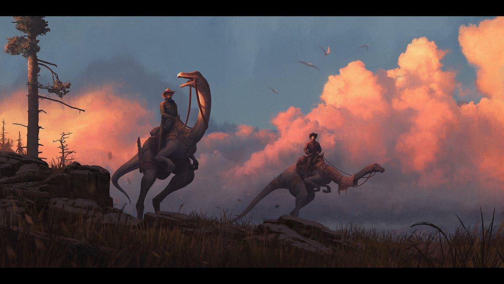
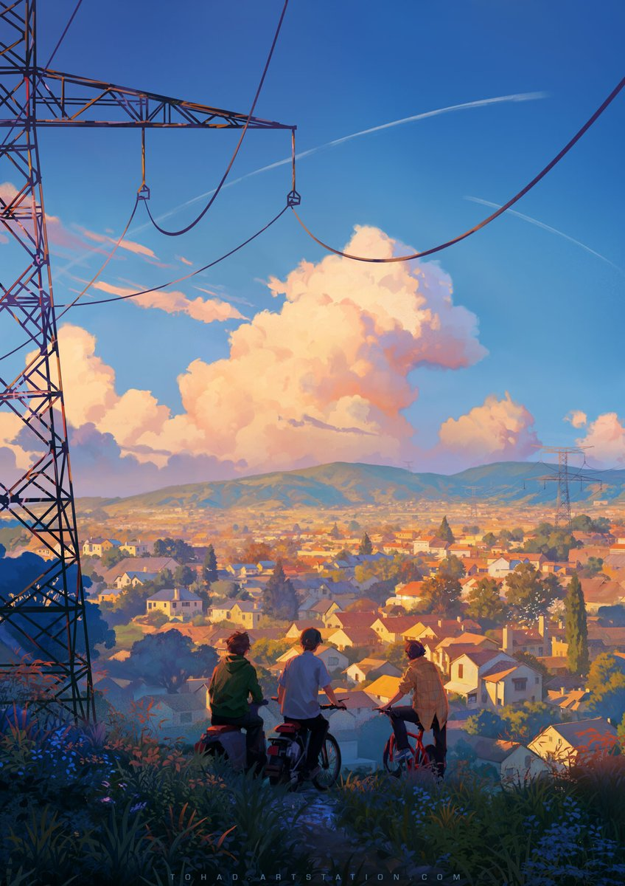
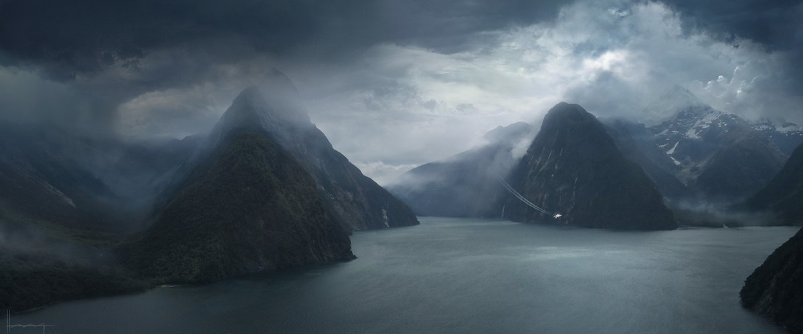
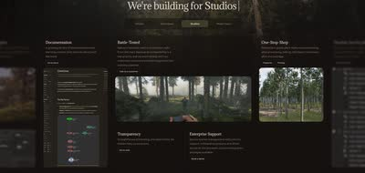

Merge VFX&CG
CG / VFX KNOWLEDGE BASE
記事・リンクを検索
背景制作まとめ
Houdiniまとめ
USD資料まとめ
海外/VFX情報サイト
記事・リンクを検索
⌘K
トップ
/
毎日作品分析
/
毎日作品分析Day27 — 雲の表現
毎日作品分析
毎日作品分析Day27 — 雲の表現
2026-05-04
言語: 日本語
形式: 毎日作品分析



雲の表現が印象的な作品を集めた分析（毎日作品分析Day27）。
関連ポスト
同じタグを持つポストです。
毎日作品分析
毎日作品分析Day25 — 背景制作におけるスケール感の演出
Environment
Composition
毎日作品分析
毎日作品分析
毎日作品分析Day18 — ワンポイントレッドの効果
Color
Composition
Environment
毎日作品分析
Darek Zabrocki氏 — 毎日作品分析Day4-2『Windmill Town』
ArtStation
Environment
毎日作品分析
Article
杉﨑亮太氏 — CG Forgeで紹介された自主制作の裏側と作品収集術
Houdini
Environment
ZBrush
Article
四维惰性氏 — 記事『岩・石のコンセプトとスカルプトアプローチ』
Zbrush
Environment
Sculpting

Pipeline/Plugin/Tool
Natsura — Houdini完結型の植生生成ツールキット
Houdini
Vegetation
Environment
Tutorial
【無料】Naughty Dog — Senior Environment Artistのウェブサイト、UEチュートリアル収録
Unreal Engine
Environment
ue
Tips
Port Town — Blenderによるセミプロシージャル環境制作ワークフロー
Blender
Environment
Showreel/Demoreel
Avatar Aangのコンセプトアート
ArtStation
Environment
Tutorial
Steffen Hampel氏 — 最新チュートリアル『Gotham - Full CG Breakdown』
Environment
Tutorial
Samuel Krug氏 — チュートリアル『巨大な海岸山脈シーンの制作』
Houdini
Blender
Environment
Showreel/Demoreel
Samuel Krug氏 — 高ディテールなArtStation作品
ArtStation
Environment
さらに見る